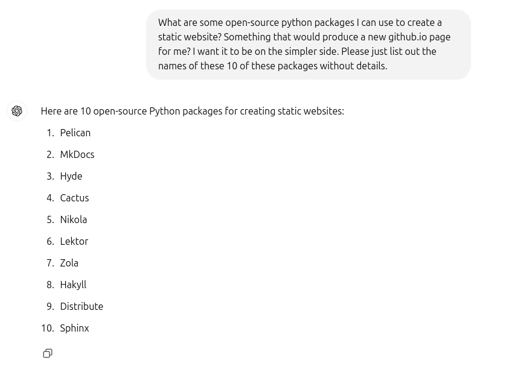

written by Roni Kobrosly on 2024-11-18 | tags: personal updates generative ai
My old personal site was starting to look a little dated and I missed working with HTML, CSS, and JS, so I made it a weekend project to do an overhaul.
I wanted to avoid the cost of getting a cloud server and stick to something simple, lightweight, and free like GitHub Pages. In other words, I wanted a static website. Problem is, I wasn't familiar with the current landscape of open source static site creators, but a buddy of mine was able to make some nice recommendations:

I worked my way through the list, checking out each's documentation. At the end, I settled on Lektor as it seemed really light-weight and I had a good existing example to use as a reference. The landscape is quite impressive and I was blown away by all of the various plug-ins these generators have (plug-ins to enable Google Analytics, tagging, commenting systems, etc...).
As a terminal lover, I settled on Terminal CSS, a "modern and minimal CSS framework for terminal lovers", which was made with ❤️ by Jonas Duri. I'm happy with the results!